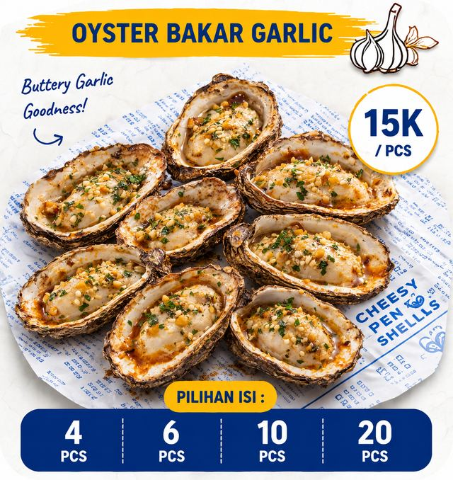
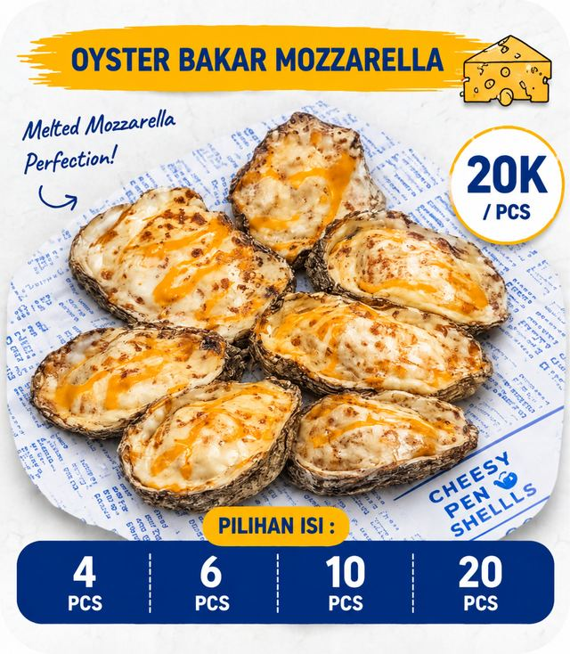
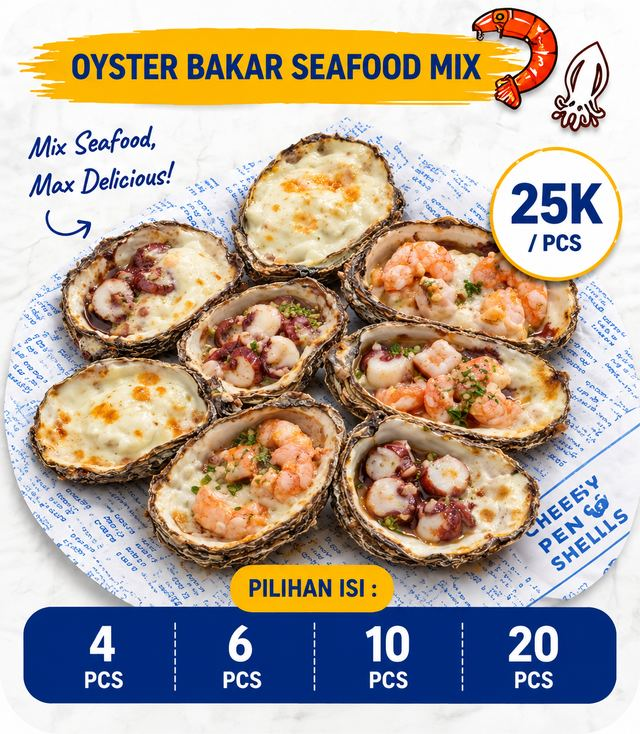
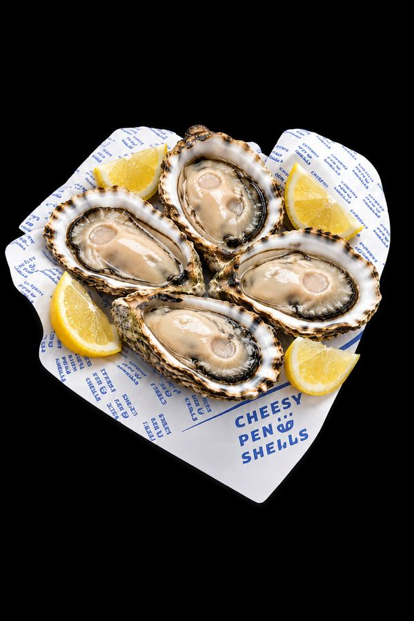
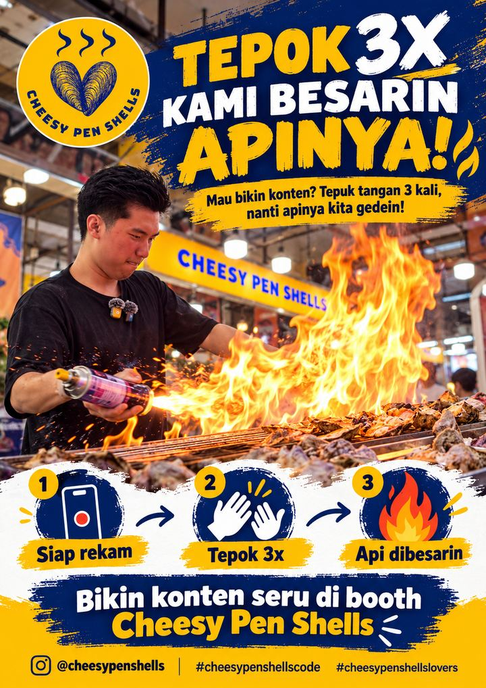

Wajib diketuk sekali. Biarkan halaman ini terbuka: saat oyster kamu siap, HP berbunyi dan bergetar.
Nomor antrian kamu
Memuat pesanan...
Sambil nunggu
Intip menu andalan kami!




Tepok 3x!
Cara seru ala Cheesy Pen Shells

- Siapkan kamera saat oyster kamu mulai dibakar.
- Tepuk tangan 3 kali di depan booth.
- Apinya kami besarin! Rekam momen apinya membesar.
- Upload & tag @cheesypenshells di sosial media kamu. Kami otomatis follow back!